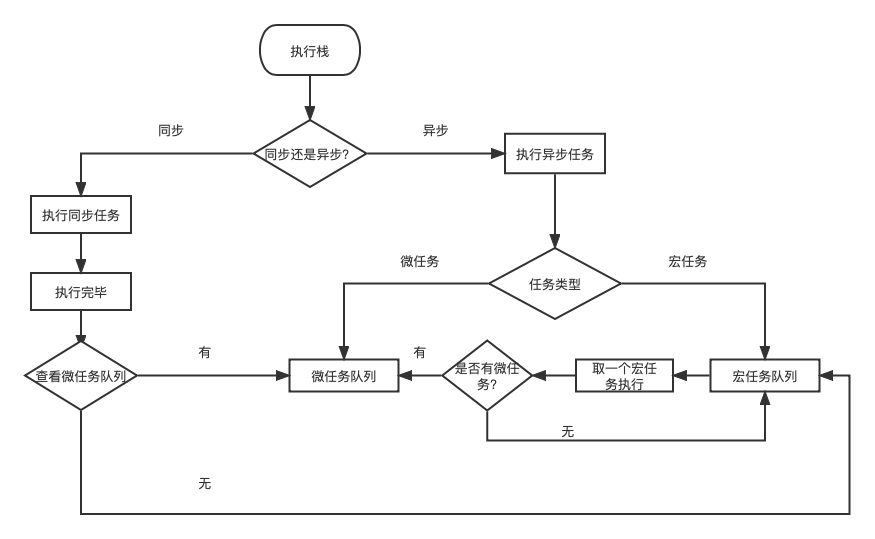

简述
事件循环分为两种，分别是浏览器事件循环和node.js事件循环。
我们都知道JavaScript是一门单线程语言，指主线程只有一个。Event Loop事件循环，其实就是JS引擎管理事件执行的一个流程，具体由运行环境确定。目前JS的主要运行环境有两个，浏览器和Node.js。
为什么js是单线程呢?
通俗地说，js的单线程是由他的用途决定的，我们知道js是浏览器脚本语言，它的用途主要用户和用户互动以及操作DOM，假设它是多线程，那么如果有两个线程任务同时对一个dom进行操作，那么就会造成错乱，因为浏览器不知道该以哪一个线程为准了。
所以为了避免复杂性，从一诞生，js就是单线程，这是这门语言的核心特征，将来也不会改变。
Event Loop（浏览器事件循环）
一、浏览器的进程和线程
浏览器是多进程的，浏览器每一个打开一个Tab页面(网页)都代表着创建一个独立的进程（至少需要四个，若页面有插件运行，则五个）。渲染进程（浏览器内核）是多线程的，也是浏览器的重点，因为页面的渲染，JS执行等都在这个进程内进行
1. GUI渲染线程
负责渲染浏览器界面，包括解析HTML、CSS、构建DOM树和RenderObject树、布局和绘制等。
当界面需要重绘（repaint）或由于某种操作引发回流(reflow)时，该线程就会执行。
注意：GUI渲染线程与JS引擎线程是互斥的。
2. js引擎线程(主线程)
也是js内核，负责解析处理js脚本，运行代码。（如V8引擎）
JS引擎一直等待并处理任务队列中的任务。一个tab页中只有一个JS线程在运行JS程序。
3. 定时器线程
setInterval和setTimeout所在线程。通过此线程计时完毕后，添加到事件队列中，等待JS引擎空闲后执行。
4. 事件触发线程
当一个事件被触发时该线程会把事件添加到事件队列，等待JS引擎处理。
这些事件可能来自JS引擎当前执行的代码块如setTimeout、也可来自浏览器内核的其他线程如鼠标点击、Ajax异步请求等。但由于JS的单线程关系，这些事件都得排队等待JS引擎处理。
5. 异步http请求线程
在XMLHttpRequest连接后是通过浏览器新开一个线程请求。
将检测到状态变更时，如果设置有回调函数，一步线程就产生状态变更时间，将这个回调再放入事件队列中，再由JS引擎执行。
二、同步任务、异步任务
单线程就意味着，所有任务需要排队，前一个任务结束，才会执行后一个任务。但如果前一个任务耗时太长，后一个任务不得不一直等待。所以如果主线程不管IO设备，挂起处于等待中的任务，先执行后面的任务。等到IO设备返回了结果，再回头把挂起的任务继续执行下去。
于是，所有任务就分为同步任务和异步任务。
同步任务指的是，在主线程上排队执行的任务，只有前一个任务执行完毕，后一个任务才能执行。
异步任务是指，不进入主线程，而进入“任务队列”的任务， 只有“任务队列”通知主线程，某个异步任务可以执行了，该任务才会进入主线程执行。
具体来说，异步执行的运行机制如下。（同步执行也是如此，因为它可以被视为没有异步任务的异步执行。）
1 | 1、所有同步任务都在主线程上执行，形成一个执行栈。 |

只要主线程空了，就会去读取”任务队列”，这就是JavaScript的运行机制。这个过程会不断重复。
三、宏任务、微任务
一个线程中，事件循环是唯一的，但是任务队列可以拥有多个。任务队列又分为宏任务，微任务。
1、宏任务（宿主环境提供的api）
script(整体代码)
setTimeout
setInterval
setImmediate（浏览器暂时不支持，只有IE10支持，具体可见MDN）
I/O
UI render
MessageChannel
postMessage
requestAnimationFrame
宿主环境：node、浏览器
2、微任务(js语言标准提供的)
process.nextTick（Node独有）
Promise
Async/Await(实际就是promise)
MutationObserver(html5新特性)
若同时存在promise和nextTick，则先执行nextTick
执行过程如下图：
在挂起任务时，js引擎会将所有任务按照类别分到这两个队列中，首先在宏任务中取出第一个任务，执行完毕后，然后执行该宏任务产生的微任务，若微任务在执行过程中产生了新的微任务，则继续执行微任务，微任务执行完毕后，再回到宏任务重进行下一轮循环，直至两个队列的任务都取完。
给个图加深理解
四、示例分析
🌰示例1(定时器)
1 | console.log('start') |
打印顺序: start、end、time2、time1
解析：整个script代码作为宏任务在主线程上先执行，遇到setTimeout挂起等待，先执行后面的同步任务，所以先输出start、end，time2在0毫秒后添加到任务队列对位，time1在1秒后添加到任务队列队尾，待主线程任务执行完毕，从队头中依次执行任务，所以之后再输出time2、time1。
🌰示例2（定时器+promise）
1 | console.log('1') |
打印顺序：1、3、4、6、5、2
解析:
- 第一段
conosle.log(1)是同步代码，直接执行，打印1 - 第二段
setTimeout是异步代码，先挂起，因为setTimeout是宏任务，因此把conosle.log(2)放入宏任务队列，等待执行 - 第三段
new Promise构造函数是同步代码，所以直接打印3、4 - 第四段
Promise.then()是异步代码，因为promise.then()是微任务，所以放到微任务队列中，等待执行 - 第五段
conosle.log(6)是同步代码，直接执行，打印6 - 同步代码执行完毕后，优先处理微任务队列中的任务，因此执行
console.log(5)，打印5 - 微任务执行完毕后，处理宏任务队列中的任务，执行
console.log('2')，打印2
思考
1 | console.log(1); |
🌰示例3（定时器+promise+async）
1 | async function async1() { |
执行顺序：async2 end、promise、end、async1 end、promise1、promise2、time
解析:
- 执行
async1()，会调用async2()，输出async2 end，await后面跟的是同步函数，所以直接把await后面的代码注册为一个微任务，跳出async1函数。 - 遇到
setTimeout，产生一个宏任务，等待执行。 new Promise构造函数是同步代码，输出promisePromise.then()产生第一个微任务，压入微任务队列，等待执行。- 继续执行代码，输出end
- 主线程代码执行完毕，开始执行当前宏任务产生的微任务队列，输出async1 end，promise1，该微任务遇到
then，产生一个新的微任务。 - 执行产生的微任务，输出promise2，此时微任务队列执行完毕。
- 执行下一个宏任务，即执行
setTimeout，输出time
🌟async/await执行顺序
我们知道async隐式返回promise作为结果的函数，简单理解，await后面的函数执行完毕时，await会产生一个微任务，但我们需要注意这个微任务产生的时机，他是执行完await后，跳出async函数，执行其它代码。其它代码执行完毕后，再回到async函数去执行剩下的代码，然后把await后面的代码注册到微任务队列当中。
如果是这样理解,那么上述代码中async1 end执行的顺序就不对了,但我们在浏览器中确实是这个输出顺序,所以我们需要搞明白await?
『await promise』的语义到底是什么？
1 | async function f() { |
简化理解为：
1 | function f() { |
『RESOLVE(p)』接近于『Promise.resolve(p)』，不过有微妙而重要的区别：p 如果本身已经是 Promise 实例，Promise.resolve 会直接返回 p 而不是产生一个新 promise。
1 | async function async1() { |
新版本浏览器会被解析（符合上述最新标准）
1 | async function async1 () { |
🌰示例4(promise+async)
1 | async function async1() { |
打印顺序：async2 end、Promise、async2 end1、promise1、async1 end
解析：
- 执行
async1()，调用async2()，输出async2 end，返回异步函数``Promise.resolve()，遇到then，第一个注册到微任务队列，async2()执行完毕，跳出async1。 - 遇到
new Promise，输出Promise，遇到then，第二个注册到微任务队列。其它代码执行完毕后，回到async1函数去执行剩下的代码，然后把await后面的代码注册到微任务队列当中（第三个）。 - 主线程代码执行完毕后，开始执行微任务队列中的任务，依次输出
async2 end1、promise1、async1 end
看下async1中执行的过程:
第一步:
1 | function async1() { |
第二步:
由于async2()返回一个异步函数promise, 那么就直接返回async2(),而不是生成一个新的promise
1 | function async1() { |
到这步就比较好理解,整个浏览器的输出顺序了
小结
await后面直接跟的为一个同步函数调用，如function async2(){console.log(1)}，这样直接把await后面的代码注册为一个微任务，可以简单理解为promise.then(await下面的代码)。跳出async1函数，去执行其它代码。await后面跟的是一个异步函数的调用，那么执行完这个异步函数后，就直接跳出async1函数，去执行其它代码，其他代码执行完毕后，回到async1函数，将await下面的代码注册为微任务。
Node.js的Event Loop
Node.js也是单线程的Event Loop，但是它的运行机制不同于浏览器环境。
看下图:
根据上图，Node.js的运行机制如下
1 | 1、V8引擎解析JavaScript脚本 |
Node.js也分宏任务和微任务。
宏任务有：
1 | - setTimeout |
微任务有:
1 | - process.nextTick(与普通微任务有区别，在微任务队列执行之前执行) |
process.nextTick方法可以在当前执行栈的尾部—下一次Event Loop之前—触发回调函数。也就是说，他指定的任务总是发生在所有异步任务之前。
setImmediate方法则是在当前任务队列的尾部添加事件，也就是说，他指定的任务总是在下一轮Event Loop时执行，这与setTimeout(fn, 0)很像。
看个例子：
1 | process.nextTick(function A() { |
输出顺序：1、2、TIMEOUT FIRED
解析：由上述代码中，我们可以知道process.nextTick指定的回调函数总是在当前”执行栈”的尾部触发，所以A函数比timeout函数先执行，而且函数B也比timeout函数先执行。这说明，如果有多个process.nextTick语句（不管它们是否嵌套），将全部在当前”执行栈”执行。
再看个例子：
1 | console.log(0) |
输出顺序： 0、4、1、3、2、TIMEOUT FIRED
解析：
- 执行同步代码
console.log(0)，输出0 - 遇到
process.nextTick，这是微任务，先挂起，将其添加到当前执行栈的尾部等待执行。 - 遇到
setTimeout，是宏任务，将其回调函数timeout添加到宏任务队列，等待执行。 - 执行同步代码
console.log(4)，输出4 - 当前执行栈的同步代码执行完毕，开始执行尾部添加的微任务，执行回调函数
A，输出1，遇到process.nextTick，将其添加到当前“执行栈”的尾部，等待执行。继续执行同步代码，输出3。 - 回调函数
B在当前“执行栈”尾部被触发，输出2。 - 所有微任务被完成，开始执行宏任务队列中的任务，
timeout回调函数被触发，输出TIMEOUT FIRED。
再看一个例子：
1 | console.log(1) |
输出顺序：1、3、4、6、8、7、5、2
解析：process.nextTick比Promise.then()先执行，虽然同样都是微任务，但后者是被添加到微任务队列中，前者是被添加到当前执行栈的尾部，前者永远都会在微任务队列执行前执行，所以前者先被执行。
再看个setImmediate的例子：
1 | setImmediate(function A() { |
输出顺序：TIMEOUT FIRED、1、2或者1、TIMEOUT FIRED、2
setTimeout及setImmediate执行顺序？
在nodejs中， setTimeout(demo, 0) === setTimeout(demo, 1)
在浏览器里面 setTimeout(demo, 0) === setTimeout(demo, 4)
1 | setTimeout(function timeout () { |
在node中执行，有时先输出timeout，有时又先输出immediate。但当将时间改为2、3时，则每次先输出immediate。
这说明在浏览器中，setImmediate它有时候是1ms之前执行，有时候又是1ms之后执行。这是因为event loop的启动也是需要时间的，可能执行到poll阶段已经超过了1ms，此时setTimeout会先执行。反之setImmediate先执行。
（完）
参考文章：
JavaScript 运行机制详解：再谈Event Loop
面试题：说说事件循环机制
async/await 在chrome 环境和 node 环境的 执行结果不一致，求解？
事件循环机制EventLoop
带你了解事件循环机制(Event Loop)